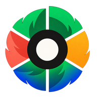

Download Lectus for Windows
One setup file. No administrator rights, no restart, and it installs for your Windows account only.
Your download has started.Look for Lectus_0.7.1_x64-setup.exe in your Downloads folder, then follow the three steps below. Nothing happened? Download it again.
Lectus_0.7.1_x64-setup.exeVersion 0.7.1, 82 MB, released 11 October 2026
Open Lectus in three steps
From the file landing in your Downloads folder to your first dictation takes about two minutes.
-
Lectus_0.7.1_x64-setup.exeDone
Open the setup file
Find it in your Downloads folder, or click it in your browser's download list.
-
Windows protected your PC
Microsoft Defender SmartScreen prevented an unrecognised app from starting. More info
Run anywayDon't runChoose More info, then Run anyway
Windows shows this for apps it has not seen often. Lectus is new and is not code-signed yet.
Before you continue, check that the file name is the Lectus setup file you just downloaded.
-

Getting Lectus ready
This takes less than a minute.
Wait a few seconds
A small window installs Lectus and then opens it. There is nothing to click through.
Your first two minutes
The first time Lectus opens, it walks you through six short screens. Pick any step to see what it asks.
Talk. Lectus types.
Tell Lectus which language you speak: English, Portuguese or both. It uses your answer to pick a speech model.
If something stops you
Lectus needs a graphics driver with Vulkan support
Install the latest graphics driver from your PC maker, or from NVIDIA, AMD or Intel, then open the setup file again. Virtual machines and PCs with only the basic Microsoft display driver cannot run Lectus yet.
Smart App Control blocked the setup file
This Windows 11 setting blocks every app that is not code-signed, and it offers no Run anyway button. Lectus cannot be installed while it is on.
Turning it off is your own security choice. On some Windows versions it cannot be turned back on without resetting Windows, so read Microsoft's guidance first.
Lectus is open. Close it and continue installing?
Choose OK to close the running copy and install, or Cancel to stop without changing anything.
MSVCP140.dll or VCRUNTIME140.dll was not found
The Microsoft Visual C++ runtime was removed after Lectus was installed. Open the setup file again. It puts a private copy next to Lectus when Windows does not have one.
A newer version is already installed
Setup asks before it replaces a newer version with an older one. The default answer keeps the newer version.
Updates
Lectus checks for a new version when it starts. It downloads the update in the background, checks its signature, and then offers to restart. It never restarts by itself, and it waits until you are not dictating.
Your settings, dictation history, shortcuts and start-with-Windows choice are kept. After an update, a What's new window shows what changed. You can also download a newer setup file here and open it over the installed copy.
Uninstall
Open Settings, then Apps, then Installed apps. Find Lectus and choose Uninstall. The uninstaller asks whether to delete your settings and dictation history too.
For administrators
Lectus installs per user into %LOCALAPPDATA%\Lectus and needs no elevation. These switches work with the setup file:
Lectus_0.7.1_x64-setup.exe /S/S install silently for the current user /NOLAUNCH install without opening Lectus afterwards %LOCALAPPDATA%\Lectus\uninstall.exe /S remove silently, keep app data
Mac
A version for Apple silicon Macs exists and is still being finished. It is not code-signed and has no installer yet, so we do not offer it here.
If you are comfortable with unsigned builds, earlier Mac builds are listed with all releases on GitHub.